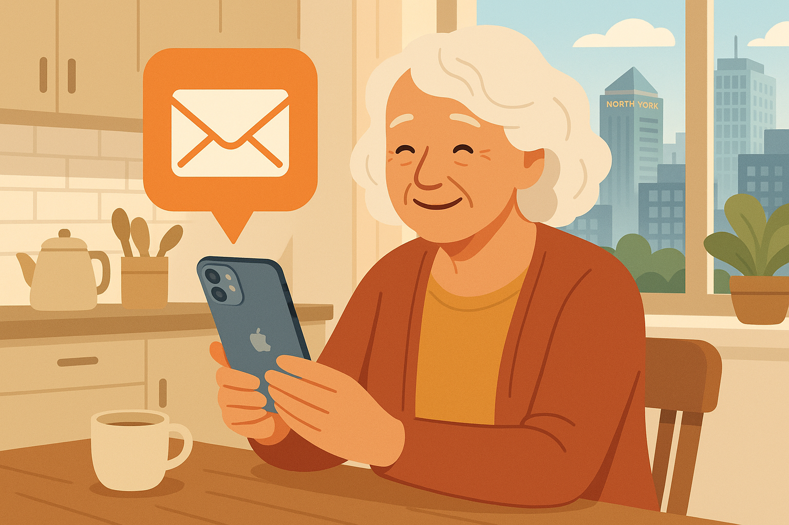
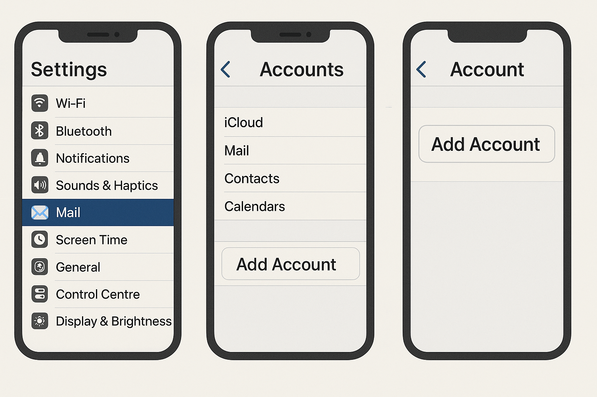
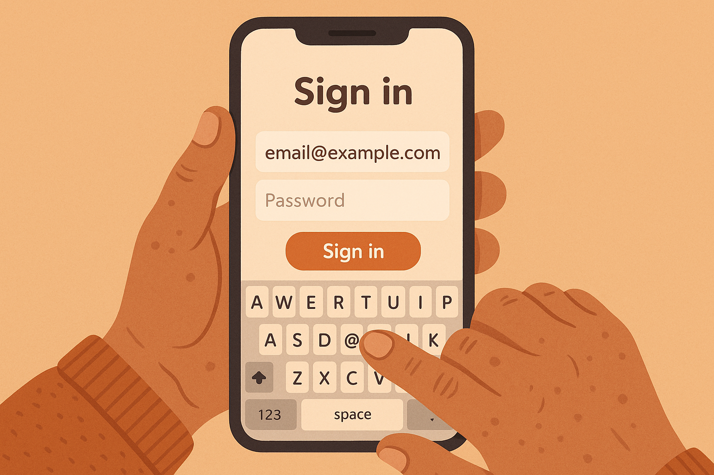
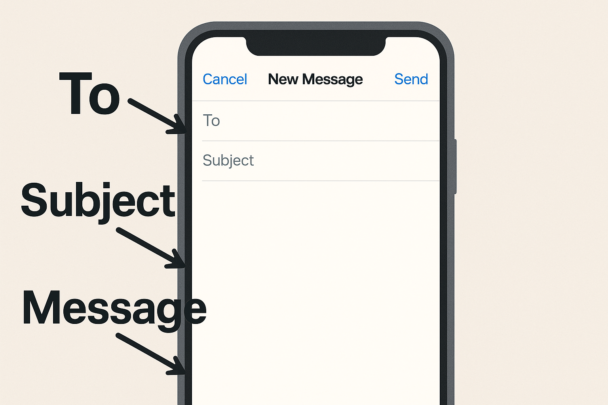

North York Seniors Guide to Setting Up Email on iPhone

Setting up email on your iPhone is easier than you think — and this guide walks you through every single step.
If you just got a new iPhone — or if you've had one for a while but never set up your email on it — you're not alone. One of the most common things I help seniors with here in North York is getting their email working on their phone. And honestly? It takes about five to ten minutes once you know where to look.
The beauty of having email on your iPhone is that you can check messages from anywhere. Whether you're sitting in your living room in Willowdale, waiting for an appointment at Bayview Village, or visiting family in Don Mills, your email travels with you. No more waiting until you get home to sit down at the computer. No more missing important messages from your doctor, your bank, or your grandkids.
I've walked hundreds of seniors through this process, and I've noticed something: the setup screens can look a bit intimidating at first, but once you understand what each step is asking for, it all makes sense. This guide is going to take you through the entire process, one step at a time, with no jargon and no assumptions about what you already know. If you can tap a button on your phone, you can set up your email.
We'll cover the four most popular types of email that my clients in North York and Toronto tend to use: Gmail (Google's email), Yahoo Mail, Outlook (which includes Hotmail and Live.com), and iCloud (Apple's own email). No matter which one you use, the steps are very similar — and I'll walk you through each one.
Before we begin, make sure your iPhone is connected to Wi-Fi. If you're at home, it probably already is. If you see the little fan-shaped Wi-Fi symbol at the top of your screen, you're good to go.
Step 1: Open Settings on Your iPhone
Let's start at the very beginning. On your iPhone's home screen — that's the screen you see when you first unlock your phone — look for an icon that looks like a grey gear or cogwheel. It's labeled "Settings" underneath it.
Tap on it once. This opens the Settings app, which is where you control everything about how your iPhone works. Think of it like the control panel for your phone.
Step 2: Navigate to Mail Settings
Once you're inside Settings, you'll see a long list of options. Don't let this overwhelm you — we only need one of them. Scroll down slowly until you see "Mail". It has a blue icon with a white envelope next to it.
Tap on "Mail". This opens your email settings.
Now, look for "Accounts" near the top of this screen. Tap on it.
You'll see a list of any email accounts already on your phone (there might be just one, like iCloud, or there might be none). At the bottom of this list, you'll see "Add Account". Tap on that.

The path is simple: Settings → Mail → Accounts → Add Account.
Step 3: Choose Your Email Provider
After tapping "Add Account," your iPhone will show you a screen with several email provider logos. You'll see options like:
- iCloud — for @icloud.com, @me.com, or @mac.com email addresses
- Microsoft Exchange — mainly for corporate email (you probably don't need this)
- Google — for @gmail.com email addresses
- Yahoo — for @yahoo.com or @yahoo.ca email addresses
- Outlook.com — for @outlook.com, @hotmail.com, or @live.com email addresses
- Other — for less common email providers (like Rogers, Bell, or a personal domain)
Tap on the one that matches your email address. Not sure which to pick? Look at the part of your email address after the @ symbol. If your email is jane.smith@gmail.com, tap Google. If it's john.doe@yahoo.ca, tap Yahoo. If it's margaret@hotmail.com, tap Outlook.com.
Step 4: Enter Your Email Address and Password
This is where the actual "connecting" happens. What you see next depends on which provider you chose:
For Gmail (Google):
- A Google sign-in page will appear
- Type your full Gmail address (for example: yourname@gmail.com)
- Tap "Next"
- Type your Gmail password
- Tap "Next" again
- Google may ask you to verify it's really you (they might send a code to your phone number or show a prompt on another device)
- Follow the prompts to verify
- When asked what to sync, make sure "Mail" is turned on (the toggle should be green)
- You can also turn on Contacts and Calendar if you'd like — this syncs your Google contacts and calendar events to your iPhone too
- Tap "Save"
For Yahoo Mail:
- A Yahoo sign-in page will appear
- Type your full Yahoo email address
- Tap "Next"
- Type your Yahoo password
- Tap "Sign In"
- Yahoo may ask you to verify your identity via a text message or email code
- Make sure "Mail" is turned on
- Tap "Save"
For Outlook / Hotmail / Live:
- A Microsoft sign-in page will appear
- Type your full email address (@outlook.com, @hotmail.com, or @live.com)
- Tap "Next"
- Type your password
- Tap "Sign In"
- Microsoft may ask to send a verification code to your phone or backup email
- Make sure "Mail" is turned on
- Tap "Save"
For iCloud:
- If you're already signed into your Apple ID on your iPhone, iCloud mail may already be set up
- Go to Settings → tap your name at the top → iCloud → iCloud Mail
- Make sure the toggle for "Use on this iPhone" is turned on (green)
- If you're not signed in with your Apple ID, you'll need your Apple ID email and password

Just type your email and password — your iPhone handles the rest of the technical setup automatically.
Step 5: Open the Mail App and Check
Once you've tapped "Save," go back to your home screen. Look for the Mail app — it's a blue icon with a white envelope on it. It comes pre-installed on every iPhone.
Tap on it. You should see your inbox with your emails loading. It might take a minute or two for all your emails to appear, especially if you have a lot of them. This is completely normal.
If you see your emails — congratulations! You've successfully set up email on your iPhone. You can now read, reply to, and send emails right from your phone.
How to Read and Reply to Emails
Now that your email is set up, here's how to actually use it:
Reading an Email:
- Open the Mail app
- You'll see a list of emails with the newest ones at the top
- Emails you haven't read yet will have a blue dot next to them
- Tap on any email to open and read it
- To go back to your inbox, tap the arrow (< ) in the top-left corner
Replying to an Email:
- Open the email you want to reply to
- Tap the curved arrow at the bottom of the screen (it points to the left)
- Tap "Reply"
- Type your message in the space above the original email
- When you're done, tap the blue up arrow (Send button) in the top-right
Writing a New Email:
- Open the Mail app
- Tap the compose icon — it looks like a square with a pencil, usually in the bottom-right corner
- In the "To:" field, type the email address of the person you want to email
- Tap the "Subject:" field and type what your email is about (like "Hello!" or "Question about appointment")
- Tap the large empty area below and type your message
- Tap the blue Send arrow when you're done

Sending an email from your iPhone is as easy as filling in three fields: To, Subject, and your message.
How to Add a Second Email Account
Many people have more than one email address. Maybe you have a Gmail for personal use and a Hotmail from years ago that you still check occasionally. The good news is that your iPhone can handle multiple email accounts without any problems.
To add a second (or third, or fourth) email account, simply repeat the steps above:
- Go to Settings → Mail → Accounts → Add Account
- Choose your provider
- Enter your email and password
- Tap Save
When you open the Mail app, you'll see all your emails from all your accounts in one place. You can also tap "Mailboxes" at the top to see each account separately.
Adjusting Email Notifications
By default, your iPhone will make a sound and show a notification every time you get a new email. Some people love this. Others find it a bit much, especially if they get a lot of emails. Here's how to adjust it:
- Go to Settings
- Tap "Notifications"
- Scroll down and tap "Mail"
- Here you can turn notifications on or off, choose whether to show them on your lock screen, and pick a notification sound
How to Delete Emails You Don't Need
Over time, your inbox can get crowded. Here's how to clean it up:
Deleting One Email:
- In your inbox, swipe your finger from right to left across the email you want to delete
- A red "Trash" button will appear
- Tap it to delete the email
Deleting Multiple Emails:
- In your inbox, tap "Edit" in the top-right corner
- Tap the circles next to each email you want to delete
- Tap "Trash" at the bottom
Don't worry — deleted emails go to a Trash folder first. They're not gone forever. If you accidentally delete something important, you can find it in the Trash and move it back to your inbox.
Understanding Email Safety
Now that you have email on your phone, it's important to stay safe. Here are a few things every senior in North York should know:
- Never tap links in emails from people you don't know. Scammers send emails that look like they're from your bank, Amazon, or Canada Post. When in doubt, don't tap.
- Your bank will never ask for your password by email. If you get an email asking for sensitive information, it's a scam.
- Look at the sender's email address carefully. Scam emails often come from addresses that look slightly wrong (like support@amaz0n.com instead of support@amazon.com).
- When in doubt, call the company directly using the phone number on their official website — not the one in the email.
For more on this topic, check out my article: How to Spot Tech Scams: Red Flags Every Senior Should Know.
Troubleshooting: Common Email Setup Problems
Problem: "Incorrect Password" Error
This is the most common issue. Here's what to do:
- Make sure Caps Lock isn't turned on (the keyboard will show capital letters if it is)
- Try typing your password slowly and carefully
- If you recently changed your password on your computer, use the new one
- If nothing works, go to your email provider's website and reset your password
Problem: Emails Not Loading
If your email account is set up but messages aren't appearing:
- Make sure you're connected to Wi-Fi (check for the fan-shaped icon at the top of your screen)
- Close the Mail app completely and reopen it
- In your inbox, pull down from the top with your finger — this forces a refresh
- Wait a few minutes — sometimes it takes time for emails to sync, especially the first time
Problem: "Cannot Verify Server Identity" Message
If you see this message, tap "Continue". This usually happens when your phone is connecting to the email server for the first time. It's safe to proceed.
Problem: Outgoing Mail Not Sending
If you can receive emails but can't send them:
- Check your internet connection
- Go to Settings → Mail → Accounts → tap your email account → tap the account name again → scroll down to "Outgoing Mail Server" and make sure it says the correct server
- If you're not sure what the correct server is, try removing the account and adding it again
Frequently Asked Questions
Can I have two email accounts on one iPhone?
Yes, absolutely! You can add as many email accounts as you'd like. Each one will show up in your Mail app, and you can view them all together or separately.
Will setting up email on my iPhone delete emails from my computer?
No. Your emails live on the email provider's servers (like Google's or Yahoo's servers). When you add your email to your iPhone, you're just getting a copy to view on your phone. Your computer will still show all the same emails.
What's the difference between the built-in Mail app and the Gmail app?
The built-in Mail app handles all types of email accounts in one place. The Gmail app (which you can download from the App Store) only works with Gmail. Either one is perfectly fine to use. I generally recommend the built-in Mail app because it keeps things simple — one app for all your email.
Do I need to set up email, or can I just use the browser?
You can always go to gmail.com or yahoo.com in Safari (your internet browser) and check your email that way. But setting it up in the Mail app is much more convenient because you'll get notifications when new emails arrive, and you won't have to type your password every time.
My email address ends in @rogers.com — can I still set it up?
Yes, but it requires a few extra steps since Rogers email uses specific server settings. When you tap "Add Account," choose "Other" instead of one of the pre-set providers. You'll need to enter the incoming and outgoing mail server addresses. If this sounds complicated, it's one of those things that's much easier with a bit of help. Give me a call and I can walk you through it or set it up for you in person.
Is it safe to have email on my phone?
Yes! Having email on your iPhone is just as safe as having it on your computer — possibly even safer, since iPhones have strong built-in security. Just make sure your iPhone has a passcode set up so nobody else can access it if you misplace your phone.
Need Help Setting Up Your Email?
If you'd rather have someone walk you through it in person, I'm here to help. I provide patient, one-on-one tech support for seniors throughout North York, Willowdale, Bayview Village, and surrounding areas. I'll come to your home and get everything set up and working — and show you how to use it.
$45/hour with satisfaction guaranteed
Call or Text: 289-203-4346Serving North York, Willowdale, Bayview Village, Don Mills & surrounding areas
Related Articles
- How to Spot Tech Scams: Red Flags Every Senior Should Know
- How to Organize Photos on iPhone: A Complete Guide for Seniors
- Why Is My iPhone So Slow? 6 Proven Ways to Speed It Up
- How to Transfer Photos from iPhone to Computer
- How North York Seniors Can Avoid Common Tech Scams
Anthony is a tech support specialist serving seniors in North York, Willowdale, and surrounding areas. He provides patient, in-home technology help with iPhones, iPads, computers, and more. He holds a Bachelor of Commerce from TMU and certifications in AI Engineering from IBM and Google.